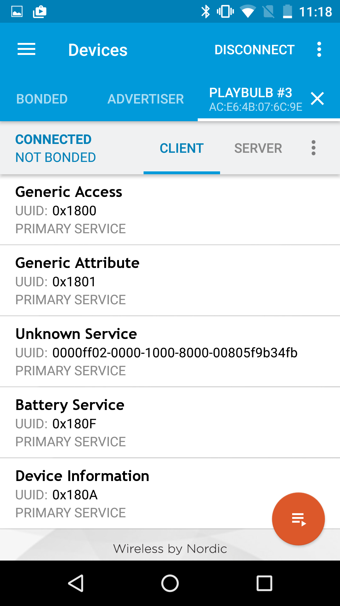

Web Bluetooth
About
Sandro Kock
- Work - SSV Software Systems
- github - sandro-k
Demo
lets control a led light candle from the web browser

What is the Web Bluetooth API
- is a Webbrowser API to connect to Bluetooth LE devices
- the specification is still very active (weekly/monthly updates)
- WebBluetooth Spec
Where can WebBluetooth be used?
- Chrome 45+ on Mac and Chrome on Android
- chrome://flags/#enable-web-bluetooth
- Chrome 53 added Origin Trials
- More details at implementation-status github page
Bluetooth Low Energy 101
- Generic Attribute Profile (GATT)
- Two device types »Peripheral« and »Central«
-
»Peripheral« is the devices that offers a Service
- e.g. the battery service of the light bulb
-
»Central« is the device that connects to the service
- e.g. this web browser
- Bluetooth devices (peripherals) advertise different services that corresponds to functions the device offers
-
Each service has one or many »Characteristics« that can be read, written or both
- e.g. the light bulb has a characteristics to change the color of the led
-
»Descriptors« describe or specify a characteristic value
- e.g. that a characteristic is valid from 0 to 100
WebBluetooth API Intro
- User Gesture Required
- navigator.bluetooth
- Web Bluetooth API relies heavily on JavaScript Promises
Connect to a Device with the »battery_service«
- Bluetooth Service Spec
- Battery Service org.bluetooth.service.battery_service 0x180F
Connect to a Device with the »battery_service«
- Bluetooth Service Spec
- Battery Service org.bluetooth.service.battery_service 0x180F
Connect to a Device with the »battery_service«
filter by name
Read a value (Bluetooth Characteristic)
Write a value
Get notifications when values change
Hack the Device
Hack the Device
